第 8 章 解三角形
8.1 边角关系
例题 8.1
题目来源： 北京大学
在 中，如果 ，证明：。
三角法
边角法
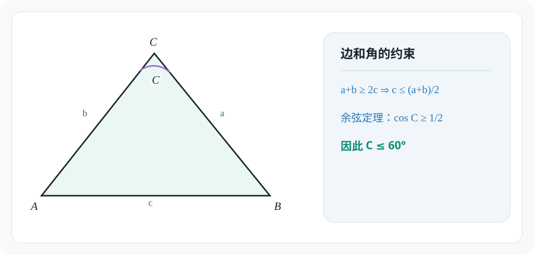
例题 8.1 的边角约束示意图例题 8.2
设 是三角形的三边， 分别是这三边所对的角。若
则
A.
B.
C.
D.
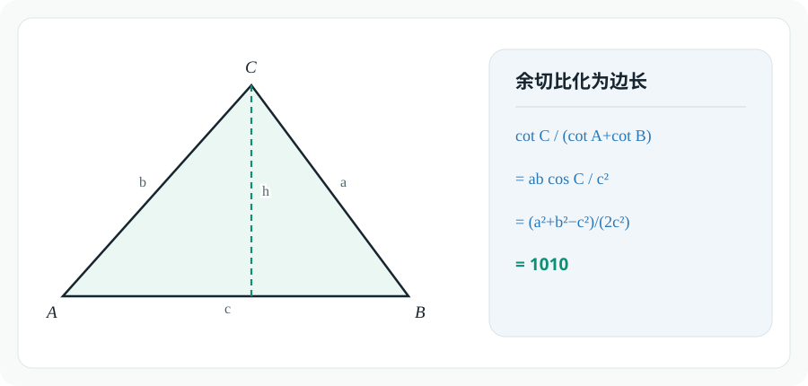
例题 8.2 的余切比边长化示意图例题 8.3
题目来源： 清华大学
在 中， 的对边分别为 。已知
求角 的大小；
若 ，求 的值。
For 1:
For 2:
勘误（Claude 补充）
本节由 Claude（Anthropic 开发的 AI 模型）补充，附在作者解答之后，并非原作者所写。
由第 1 问 ，应有 ，即 （原文写成了 和 ）。这一步后面没有用到，最终答案 不受影响。
如果直接用边表示余弦,恐怕是复杂的,思路无以为继:
这里我们推导一个新公式:余弦平方差
进一步化简:
利用齐次化计算:
回代目标式:
回顾计算过程,我们发现了更简便的路径:
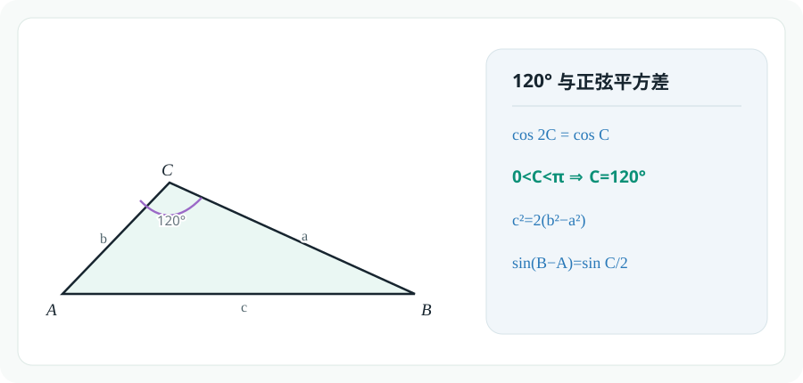
例题 8.3 的 120 度三角形示意图8.2 三角形的特殊线
例题 8.4
题目来源： 清华大学
已知 的三个内角 所对的边分别为 ，且满足
则
A. 面积的最大值为
B. 周长的最大值为
C.
D.
初步观察,看似条件1不是关于边的齐次式,难以化成只含正弦的表达式. 实际上,结合条件2,可以通过常量代换的方式调整次数:
接下来先考虑周长:
然后考虑面积:
正确答案:AC
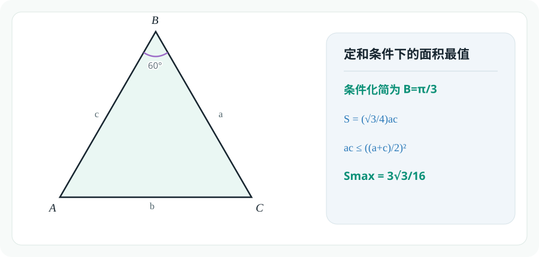
例题 8.4 的定和面积最值示意图例题 8.5
题目来源： 北京大学
已知某三角形的两条高的长度分别为 和 ，则它的第三条高的长度取值区间为
A.
B.
C.
D. 前三个答案都不对
不妨设三角形边a,b上的高为10,20,边c上的高为x:
我们已经使用了,这个边界条件.
为了满足三角形的边条件,我们还需要利用()
综上,答案选C
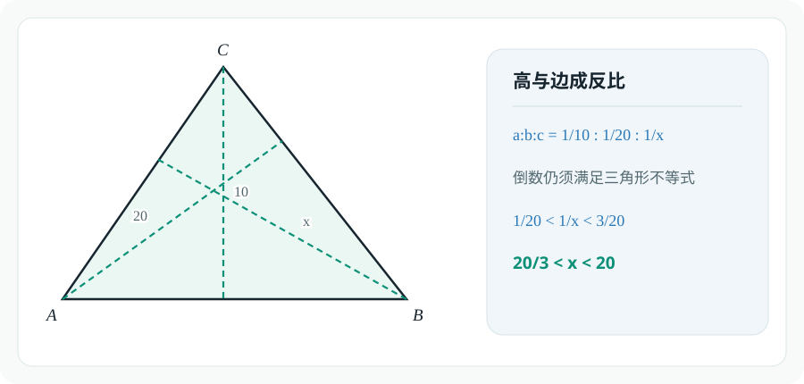
例题 8.5 的三条高与边长关系图例题 8.6
题目来源： 北京大学
在 中，，，， 为边 上的高，则 和 的内切圆圆心之间的距离为
A.
B.
C.
D. 前三个答案都不对
先计算BD,CD:
计算内切圆圆心到BC边的距离(这同时也是内切圆圆心到AD的距离):
因此,内切圆圆心距离为:
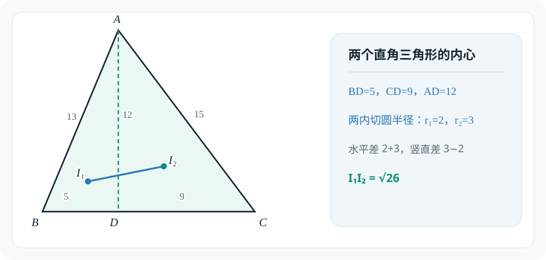
例题 8.6 的两个直角三角形内心图例题 8.7
题目来源： 北京大学
是凸四边形 的对角线 和 的交点。已知 、、、 的周长相同，、、 的内切圆半径分别为 ，则 的内切圆半径为
A.
B.
C.
D. 前三个答案都不对
熟知三角形面积公式,因为四个三角形周长相等,故 、、、面积比就等于内切圆半径比.
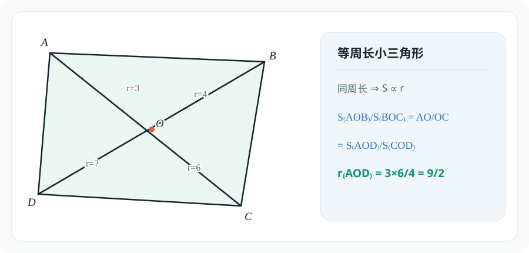
例题 8.7 的等周长小三角形图8.3 三角形的特殊线
例题 8.8
题目来源： 同济大学
在 中，， 是角 的角平分线，且 。
- 求 的取值范围；
- 若 ，问 为何值时， 最短？
边
For 1:
我们回顾一下三角形内的斯特瓦尔特定理:
设,有:
于是,,即
For 2:
根据取等条件,可以解出的值,进而求出:
角
For 1:
设,有:
For 2:
当时,:
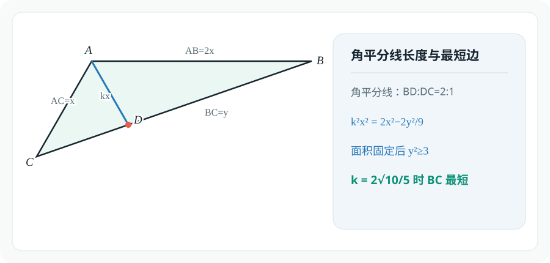
例题 8.8 的角平分线长度与最短边示意图例题 8.9
题目来源： 2025 北京大学
在 中， 在 上， 平分 ，，，求 。
角
由于,设.
在三角形ADC里使用正弦定理:
边
根据角平分线定理,设,在三角形ABC中用斯特瓦尔特定理:
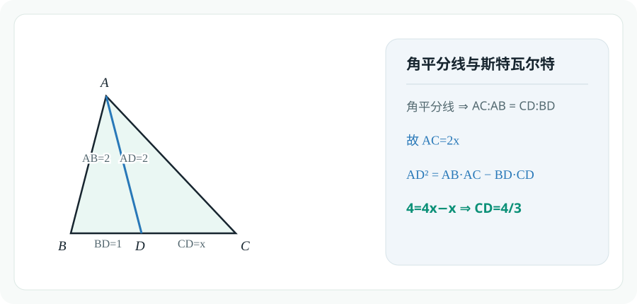
例题 8.9 的角平分线与斯特瓦尔特定理示意图例题 8.10
题目来源： 北京大学
已知三角形三条中线的长度分别为 ，则该三角形的面积为
A.
B.
C.
D. 前三个答案都不对
Lemma:三角形三条中线可以构成三角形,且新三角形和原三角形的面积比为.
回到本题,则是:
关于这个引理,可以用向量给出证明:
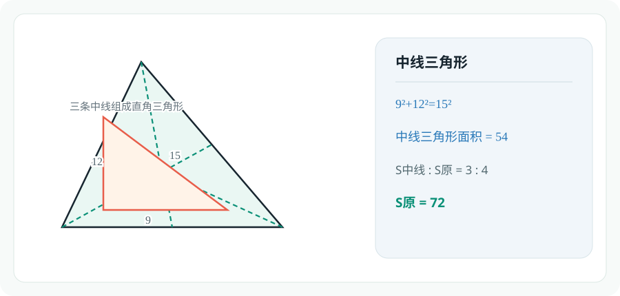
例题 8.10 的中线三角形示意图:例题 8.11
如图，点 分别是 三边 上的三等分点，，，。若 ，求 。
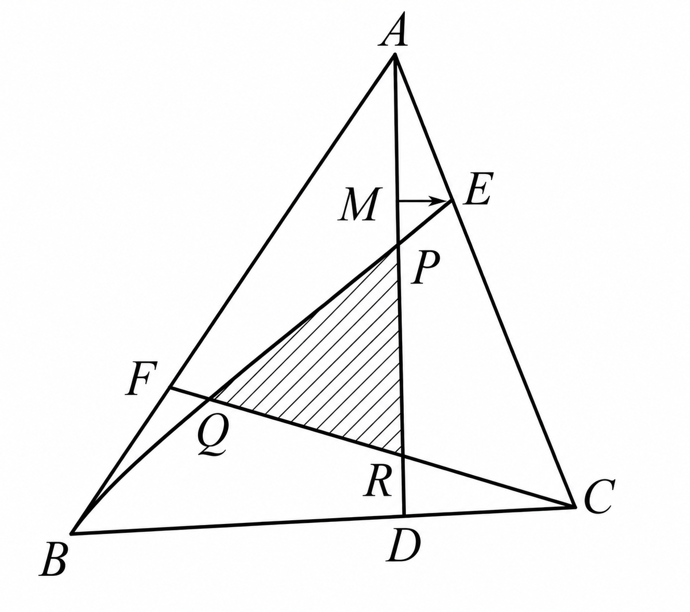
例题 8.11 的原 PDF 几何示意图此题需要大量使用梅涅劳斯定理求线段比:
同理,根据图形对称性有:
于是,线段的比例已知,我们得以大展拳脚:
当然,此题同样可以用平面向量共线定理解决,请读者自证.
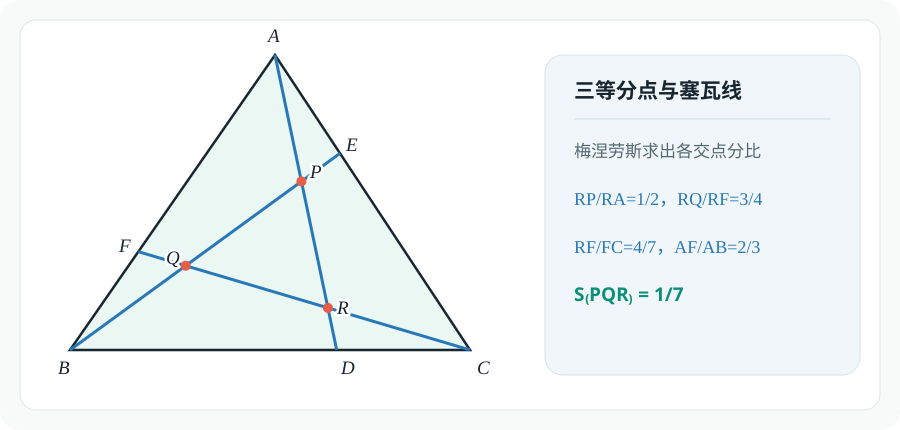
例题 8.11 的三等分点与塞瓦线示意图例题 8.12
题目来源： 北京大学
求证：边长为 的正五边形的对角线长为 。
易知对角线长:
已知:
故:
更有趣味的解法:托勒密定理
在五边形顶点中任选4点,用托勒密定理:
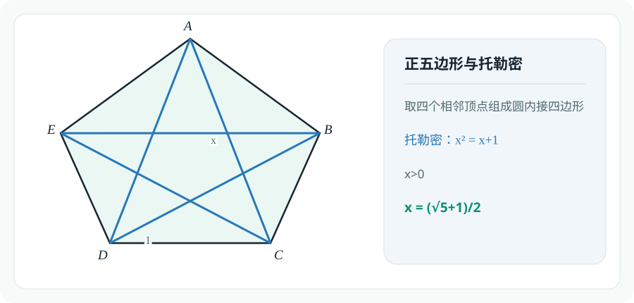
例题 8.12 的正五边形托勒密示意图例题 8.13
题目来源： 北京大学
在圆内接四边形 中，，，则四边形 的面积等于
A.
B.
C.
D. 前三个答案都不对
因为,故.
再考虑托勒密定理:
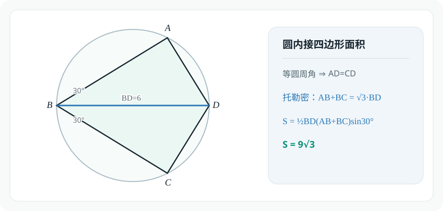
例题 8.13 的圆内接四边形面积示意图例题 8.14
题目来源： 北京大学
在圆周上逆时针依次取 个点 ，已知 ，，，，则该圆的直径为
A.
B.
C.
D. 前三个答案都不对
看到圆内角平分线,我们故技重施,用托勒密定理:
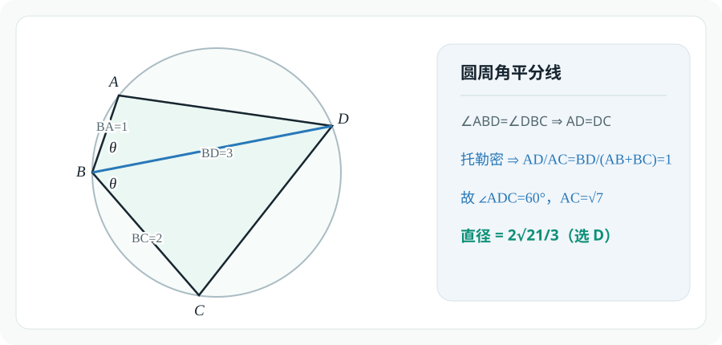
例题 8.14 的圆周角平分线示意图例题 8.15
题目来源： 北京大学
在凸四边形 中，，，，四边形 的面积等于
则 的长（精确到小数点后 位）为
A.
B.
C.
D. 前三个答案都不对
四边形面积是对边乘积的一半,这提醒我们使用托勒密定理:
这表明所有等号都成立,即四点共圆.
根据图形对称性,有:
根据角度求边:
补充说明（Claude 补充）
本节由 Claude（Anthropic 开发的 AI 模型）补充，附在作者解答之后，并非原作者所写。
上面第一个不等式应为 （对角线乘积的一半），取等要求 ；第二个不等式是托勒密不等式，取等要求四点共圆。“由对称性 ”可以这样说明：共圆且 ，所以 是直径；直径 垂直于弦 ，故 垂直平分 ，从而 、。又 、，所以 ，答案 A 正确。
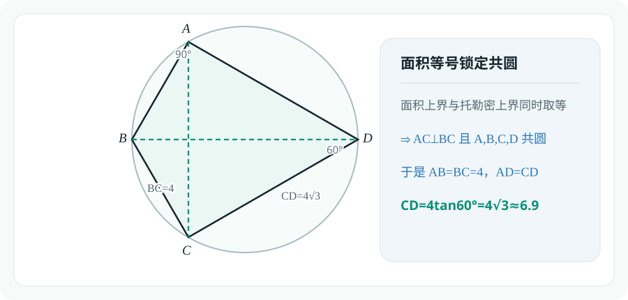
例题 8.15 的面积等号与共圆示意图8.4 平面几何中的变换
例题 8.16
题目来源： 北京大学
已知正方形 的边长为 ， 是正方形内部的 个点，使得 、、 和 都是正三角形，则四边形 的面积等于
A.
B.
C.
D. 前三个答案都不对
根据对称性,显然四边形为正方形,故:
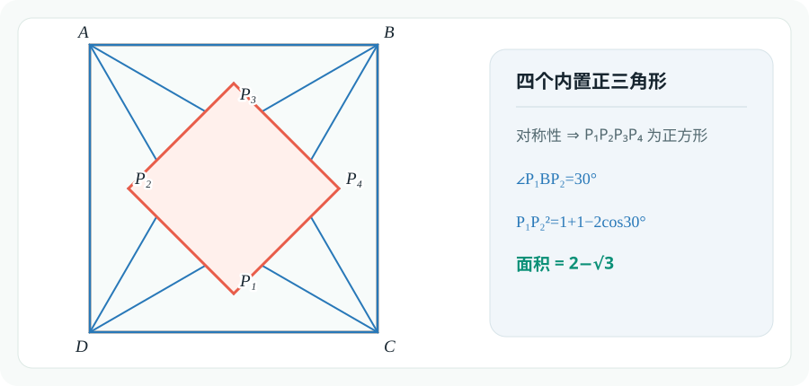
例题 8.16 的四个内置正三角形示意图例题 8.17
题目来源： 北京大学
正方形 与点 在同一平面内。已知该正方形的边长为 ，且
则 的最大值为
A.
B.
C.
D. 前三个答案都不对
Lemma:
于是消去PB,PC得:
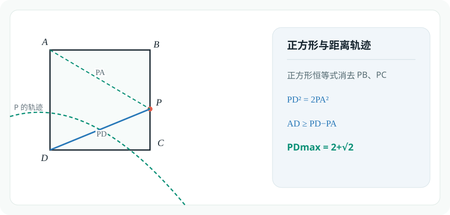
例题 8.17 的正方形距离轨迹示意图例题 8.18
题目来源： 上海交通大学
设 表示三角形三边长，均为整数，且 。若 （ 为正整数），则可组成这样的三角形 ______ 个。
长度分别为的边能构成三角形的充要条件:
那么固定,考察的可能情况数:
总情况数:
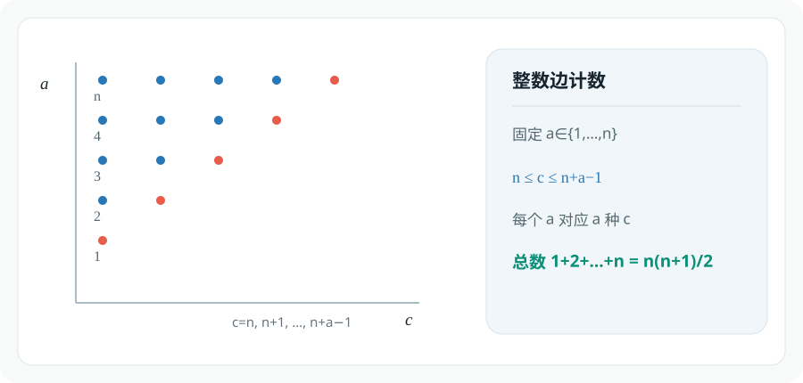
例题 8.18 的整数边计数示意图
正在加载评论…